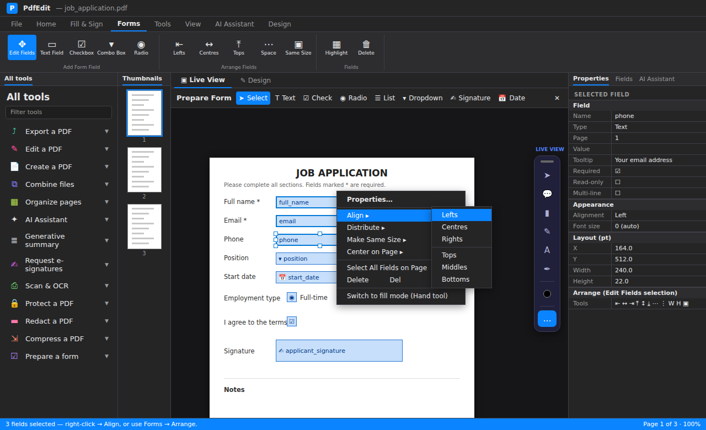
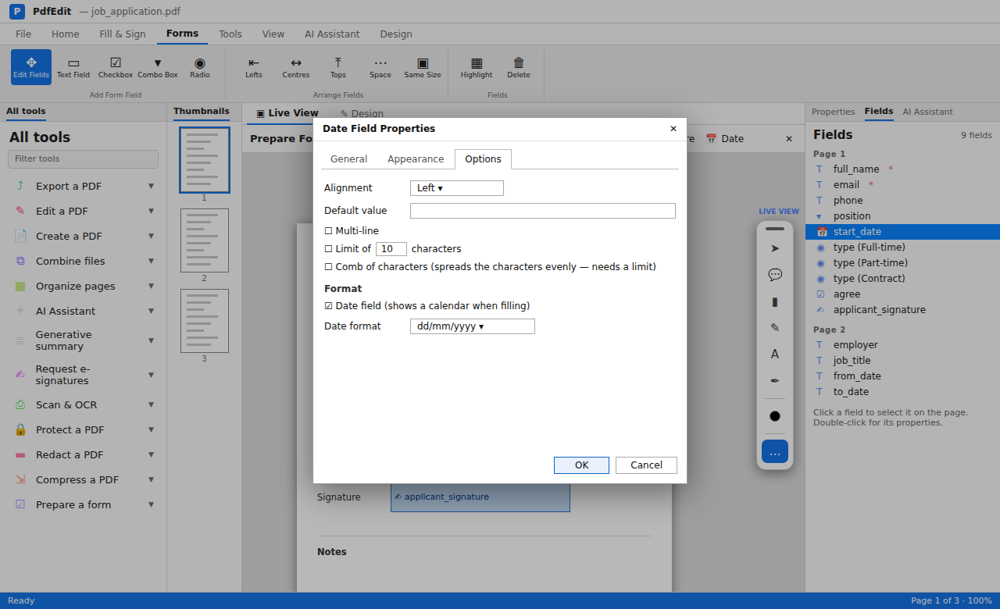

Tutorials > Forms and signing
Make a form fillable
Turn a flat PDF form into a proper fillable form with Detect Fields, then tidy the fields and set their options.
A fillable form has real fields that anyone can click and type into, in any PDF reader. PdfEdit can find the blanks on a flat form for you, and you can add, move and set up fields by hand.
Open the flat form#
Open the PDF. It can be a form made in Word and saved as PDF, or a scanned paper form.
TipGot the form as a Word document? Open the
.docxin PdfEdit instead. Content controls, ☐ boxes and______blanks become fields automatically.
Let PdfEdit find the fields#
Click Detect Fields (Edit tab). PdfEdit looks for boxes, blank lines, check boxes and signature lines, names each field after the label beside it, and lists what it found.
Untick anything you don't want, fix any names, then click Add.
Check the fields#
Click Edit Fields on the Edit tab (on Windows you can also use Prepare Form or press E). Each field shows as a named box.
- Drag a field to move it. Drag a handle to resize it.
- Arrow keys nudge by 1 point, or 10 with Shift.
- Select several fields (Ctrl+click or drag a box round them), then right-click to Align, Distribute or Make Same Size.

Add any fields it missed#
Pick a field type from the toolbar: Text, Check Box, Radio Button, List Box, Dropdown, Date or Signature. Then click the page to drop one, or drag to size it.
For a group of radio buttons (for example Yes / No), give them the same group name so only one can be chosen.
Set the options#
Double-click a field (or use Field Properties) to set:
- General: name, tooltip, Required, read only
- Appearance: border, fill, font size and colour
- Options: alignment, default value, multi-line, character limit, comb (one letter per box), date format, list choices
For numbers, set a Format (number, currency, percentage or date), and use Calculate to add up or multiply other fields, for example a total on an order form.

Test it#
Click Apply Changes (or switch back from Edit Fields), then fill the form in yourself. Press Tab to check the fields go in a sensible order.
Save#
Save writes the fields into the PDF. Date fields use Acrobat's own scripts, so the form behaves the same in Adobe Reader.
What's next#
- Fill a form for every row of a spreadsheet
- Preparing forms in the user guide